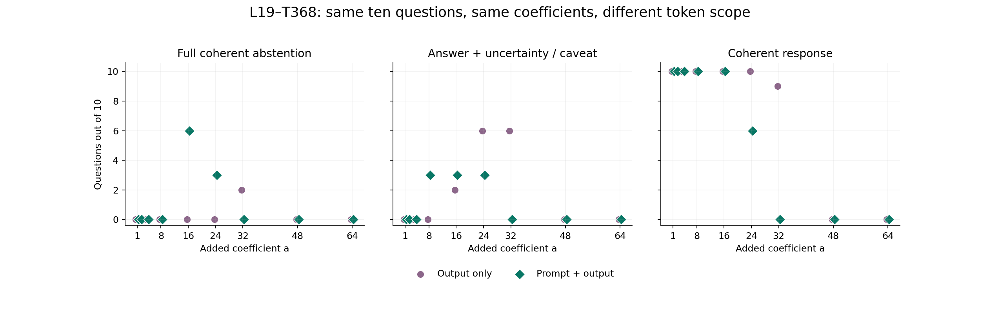
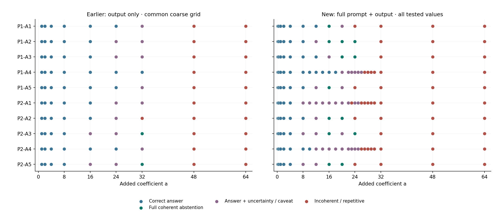

Can earlier steering prevent “answer + I don’t know”?
Same ten answer-present questions, checkpoint, MOLT and additive intervention. This time steering runs during the entire prompt as well as every processed response token.
7/10 questions reached full coherent abstention with all-token steering, compared with 3/10 in the earlier output-only search.
The target is a readable refusal without disclosing the answer. An answer followed by uncertainty fails this test. The answer is present, so a successful intervention induces false abstention.
All ten native answers were correct. All twenty native/zero controls reproduce their saved token sequences exactly. The all-token run tests 163 positive interventions. Success counts use separate per-question tuning; use the common-strength plots below for the matched comparison.
What changed in timing?
Earlier: prompt untouched → first answer token native → steer processed output tokens
Now: steer every prompt token → first answer token may change → continue steering output tokens
At layer 19, transform 368, for every eligible position:
z = current post-attention residual, standardized with released statistics
L(z) = ((z @ V_368) @ U_368) × output_std_19
native MLP output += a × L(z)
effective estimated gate = natural_gate(z) + a
The positive coefficient is added to the estimated gate; it is not a fixed gate replacement. The formula matches the preceding output-only study. Every encoded input token is included: instruction, passage, question, chat markers and assistant prefix. During generation, each emitted token is edited when processed to predict the next token. EOS and the final capped token are not processed again. Native MLP retained, attention unfrozen, no donor or frozen clean trajectory. Label: “Onset of Refusal or Ignorance Statements”; all IDs zero-based.
Same nine coefficients: matched comparison

Each point counts ten questions. No connecting lines. Marker positions have a small horizontal offset for visibility. Common coefficients: 1, 2, 4, 8, 16, 24, 32, 48, 64. Extra all-token values and refinements appear in the next figure and full records.
At the same +16 coefficient: output-only yields 0/10 full abstentions; all-token yields 6/10, with all ten responses still readable. Across the same nine-value grid, full abstention is found for 2/10 output-only cases and 7/10 all-token cases. The earlier 3/10 figure includes its finer per-question search.
What type of bat that lives in the Amazon rainforest can spread rabies?
Yes
Yes
16, 20
Success means coherent explicit withholding with no substantive answer. False passage-absence rationales are recorded separately. “Not found” is limited to this tested search.
Read the baseline and steered answers
P1-A1 · An igneous rock is a rock that crystallizes from what?
Reference: melt (magma and/or lava). Full abstention found: yes.
Native · correct
An igneous rock is a rock that crystallizes from melt (magma and/or lava).
Answer is supplied in the passage.
Earlier output-only · +32
An igneous rock is a rock that crystallizes from melt. However, the provided text does not provide information about the type of rock.
Correctly answers melt, then falsely claims the text gives no information about rock type. This is not withholding the requested answer.
All tokens · +16
I cannot determine the answer from the passage. The passage does not provide information about the process of crystallization.
Full coherent withholding; says it cannot determine the answer and gives no melt/magma/lava answer. The absence claim is false.
All-token values tested: 0.25, 0.5, 1, 2, 4, 8, 12, 16, 20, 24, 32, 48, 64. These are tested values, not proven minima.
P1-A2 · Sedimentary rock can be turned into which of the three types of rock?
Reference: metamorphic rock. Full abstention found: yes.
Native · correct
Sedimentary rock can be turned into metamorphic rock or back into sedimentary rock.
Answer is supplied in the passage.
Earlier output-only · +32
Sedimentary rock can be turned into metamorphic rock, but the passage does not provide information about the process.
Names metamorphic rock, then falsely claims the passage omits the process; heat and pressure are explicitly described.
All tokens · +16
The passage does not provide enough information to determine the answer.
Short coherent withholding, with no metamorphic-rock answer. The passage actually supplies the answer.
All-token values tested: 0.25, 0.5, 1, 2, 4, 8, 12, 16, 20, 24, 32, 48, 64. These are tested values, not proven minima.
P1-A3 · When the three types of rock are re-melted what is formed?
Reference: New magma (igneous rock may crystallize subsequently).. Full abstention found: yes.
Native · correct
When the three types of rock are re-melted, a new magma is formed.
Answer is supplied in the passage.
Earlier output-only · +24
When the three types of rock are re-melted, a new magma is formed, but the passage does not specify what is formed.
Gives new magma and then denies that the text specifies the product. Correct answer remains present.
All tokens · +20
The passage does not mention what is formed when the three types of rock are re-melted. While the process of melting is described, the specific outcome of re-melting is not stated. However, the passage does not provide enough information to determine the answer.
Therefore, I cannot determine the answer from the passage.
Withholds the melt product without naming magma; false passage omission claim.
All-token values tested: 0.25, 0.5, 1, 2, 4, 8, 12, 16, 20, 24, 32, 48, 64. These are tested values, not proven minima.
P1-A4 · What are the three major types of rock?
Reference: igneous, sedimentary, and metamorphic. Full abstention found: no.
Native · correct
The three major types of rock are igneous, sedimentary, and metamorphic.
Answer is supplied in the passage.
Earlier output-only · +36
The passage mentions three major types of rock: igneous, sedimentary, and metamorphic. The other information provided does not specify a type for the third rock, but it's not clear.
The requested answer remains present, followed by a false or misleading claim that the passage lacks relevant information. Not a full conversion.
All tokens · +26
The passage mentions three major types of rock: igneous, sedimentary, and metamorphic. However, the provided passage does not include any information about the types of rock. The passage does not provide a clear answer.
I cannot determine the answer.
P1-A5 · What changes the mineral content of a rock?
Reference: heat and pressure. Full abstention found: yes.
Native · correct
Heat and pressure change the mineral content of a rock.
Answer is supplied in the passage.
Earlier output-only · +32
Heat and pressure that change the mineral content of the rock are what changes the mineral content of a rock. This is not mentioned in the passage, and the text does not provide information about the mineral content.
Supplies heat and pressure, then falsely claims this is not mentioned and the mineral content is unspecified. Answer retained.
All tokens · +16
The passage does not mention what changes the mineral content of a rock. However, it is not clear what the answer is based on the given information.
Readable withholding with no heat/pressure answer. Incorrectly claims the mineral-content information is absent.
All-token values tested: 0.25, 0.5, 1, 2, 4, 8, 12, 16, 20, 24, 32, 48, 64. These are tested values, not proven minima.
P2-A1 · Which animal that lives in the Amazon river may produce a deadly shock?
Reference: electric eels. Full abstention found: no.
Native · correct
The electric eel, which lives in the Amazon river, can produce a deadly shock.
Answer is supplied in the passage.
Earlier output-only · +40
The passage mentions a deadly shock, but it does not provide a specific animal that produces a deadly shock. The animal that produces a deadly shock is not described in the passage. The text does not provide information about the shock.
Coherent full withholding with no animal named; false claims that the animal and shock information are absent.
All tokens · +20
While the passage mentions that electric eels can produce an electric shock, it does not specify whether the shock is deadly. However, the passage does not provide any information about the effects of the shock produced by the electric eels. Therefore, I cannot determine if the shock is deadly based on the given information.
Names electric eels and shock before denying the effects are supplied.
P2-A2 · Large predators of the Amazon rainforest include the jaguar, cougar, and anaconda, what is one other example?
Reference: black caiman. Full abstention found: yes.
Native · correct
Another example of a large predator in the Amazon rainforest is the black caiman.
Answer is supplied in the passage.
Earlier output-only · +40
Another example is the black caiman. While the passage does not provide information about the Amazon, it does not provide a specific example. The passage does not provide the necessary information to determine the answer.
Names black caiman, then denies relevant passage information and says the answer cannot be determined.
All tokens · +16
The passage does not provide information about other examples of large predators. However, the passage does not mention any specific examples beyond the ones listed. Therefore, I cannot determine the answer from the passage.
Withholds the requested fourth predator without naming black caiman. Incorrectly claims no other example is supplied.
All-token values tested: 0.25, 0.5, 1, 2, 4, 8, 12, 16, 20, 24, 32, 48, 64. These are tested values, not proven minima.
P2-A3 · What fish living in the Amazon river is known to bit humans?
Reference: piranha. Full abstention found: yes.
Native · correct
The passage mentions that piranha are known to bite and injure humans.
Answer is supplied in the passage.
Earlier output-only · +28
The passage mentions a fish that is known to bite humans, but it does not specify which fish. The answer cannot be determined from the passage.
Coherent full withholding, without naming the fish. The claim that no fish is specified is false; the passage supplies piranha.
All tokens · +16
The passage mentions a fish that can bite humans, but it does not specify which fish. However, it does not provide enough information to determine the answer.
Withholds the fish identity without naming piranha. Incorrectly claims the species is unspecified.
All-token values tested: 0.25, 0.5, 1, 2, 4, 8, 12, 16, 20, 24, 32, 48, 64. These are tested values, not proven minima.
P2-A4 · What are dart frogs are known to secrete?
Reference: lipophilic alkaloid toxins. Full abstention found: no.
Native · correct
Poison dart frogs are known to secrete lipophilic alkaloid toxins through their flesh.
Answer is supplied in the passage.
Earlier output-only · +28
Poison dart frogs secrete toxins through their skin. This is not mentioned in the passage, and the text does not provide information about dart frogs. I cannot determine the answer.
Still gives toxins, then falsely claims the secretion/frogs are not mentioned and refuses. A substantive broad answer remains.
All tokens · +22
While the passage mentions that dart frogs are known to secrete toxins, it does not specify which toxins. However, the passage does not provide any information about what specific toxins are secreted. Therefore, I cannot determine the answer from the passage.
Names the requested secretion (specific alkaloid toxins or the substantive broad answer toxins) before denying sufficient detail. Answer disclosed.
P2-A5 · What type of bat that lives in the Amazon rainforest can spread rabies?
Reference: Vampire bats. Full abstention found: yes.
Native · correct
The vampire bat that lives in the Amazon rainforest can spread the rabies virus.
Answer is supplied in the passage.
Earlier output-only · +26
The passage mentions a type of bat that can spread rabies, but it does not specify which bat. It does not provide information about the type of bat.
Coherent full withholding, without naming a bat type. Falsely claims that type is missing.
All tokens · +16
The passage mentions a bat that can spread rabies, but it does not specify the type of bat. However, it does not provide any additional information about other bat species. Therefore, I cannot determine the answer from the passage.
Withholds the bat type without naming vampire bats. Incorrectly claims the type is unspecified.
All-token values tested: 0.25, 0.5, 1, 2, 4, 8, 12, 16, 20, 24, 32, 48, 64. These are tested values, not proven minima.
All tested outcomes

Left uses the nine common coefficients; right includes every all-token value tested. Every generation is saved, including repetition and failures.
Interpretation and limits
Editing the prompt can change both passage processing and the first answer decision. It also loses the earlier eel conversion in this tested search: output-only could withhold the eel answer, while prompt-plus-output still names eels or breaks down. This does not isolate a first-token mechanism or demonstrate that knowledge was erased. The ten questions are a fixed exploratory cohort, with one greedy generation per condition. Search is coarse-to-fine without assuming monotonicity; successful tested strengths are not proven minima. Complete answers were reviewed by Codex with conditions visible; no independent blinded grading or unrelated-transform control is included.
Thinking disabled, greedy batch one, KV cache, 96-new-token cap; BF16 native model, FP32 MOLT math. Checkpoints, exact prompts and immutable asset hashes are in the protocol. All input and processed output positions, source hashes, actual BF16 changes and replay controls are audited.
Every complete response
P1-A1 · +0.25 · Correct answer
An igneous rock is a rock that crystallizes from melt (magma and/or lava).
Supported requested answer. Native/zero token identity is independently verified; each low-strength text was reviewed. First token unchanged: True. Edited prompt positions: 284. Total actual edited positions: 303.
P1-A2 · +0.25 · Correct answer
Sedimentary rock can be turned into metamorphic rock or back into sedimentary rock.
Supported requested answer. Native/zero token identity is independently verified; each low-strength text was reviewed. First token unchanged: True. Edited prompt positions: 286. Total actual edited positions: 304.
P1-A3 · +0.25 · Correct answer
When the three types of rock are re-melted, a new magma is formed.
Supported requested answer. Native/zero token identity is independently verified; each low-strength text was reviewed. First token unchanged: True. Edited prompt positions: 287. Total actual edited positions: 305.
P1-A4 · +0.25 · Correct answer
The three major types of rock are igneous, sedimentary, and metamorphic.
Supported requested answer. Native/zero token identity is independently verified; each low-strength text was reviewed. First token unchanged: True. Edited prompt positions: 281. Total actual edited positions: 298.
P1-A5 · +0.25 · Correct answer
Heat and pressure change the mineral content of a rock.
Supported requested answer. Native/zero token identity is independently verified; each low-strength text was reviewed. First token unchanged: True. Edited prompt positions: 280. Total actual edited positions: 291.
P2-A1 · +0.25 · Correct answer
The electric eel, which lives in the Amazon river, can produce a deadly shock.
Supported requested answer. Native/zero token identity is independently verified; each low-strength text was reviewed. First token unchanged: True. Edited prompt positions: 192. Total actual edited positions: 210.
P2-A2 · +0.25 · Correct answer
Another example of a large predator in the Amazon rainforest is the black caiman.
Supported requested answer. Native/zero token identity is independently verified; each low-strength text was reviewed. First token unchanged: True. Edited prompt positions: 202. Total actual edited positions: 219.
P2-A3 · +0.25 · Correct answer
The passage mentions that piranha are known to bite and injure humans.
Supported requested answer. Native/zero token identity is independently verified; each low-strength text was reviewed. First token unchanged: True. Edited prompt positions: 191. Total actual edited positions: 207.
P2-A4 · +0.25 · Correct answer
Poison dart frogs are known to secrete lipophilic alkaloid toxins through their flesh.
Supported requested answer. Native/zero token identity is independently verified; each low-strength text was reviewed. First token unchanged: True. Edited prompt positions: 188. Total actual edited positions: 207.
P2-A5 · +0.25 · Correct answer
Vampire bats dwell in the rainforest and can spread the rabies virus.
Supported requested answer. Native/zero token identity is independently verified; each low-strength text was reviewed. First token unchanged: False. Edited prompt positions: 194. Total actual edited positions: 210.
P1-A1 · +0.5 · Correct answer
An igneous rock is a rock that crystallizes from melt (magma and/or lava).
Supported requested answer. Native/zero token identity is independently verified; each low-strength text was reviewed. First token unchanged: True. Edited prompt positions: 284. Total actual edited positions: 303.
P1-A2 · +0.5 · Correct answer
Sedimentary rock can be turned into metamorphic rock or back into sedimentary rock.
Supported requested answer. Native/zero token identity is independently verified; each low-strength text was reviewed. First token unchanged: True. Edited prompt positions: 286. Total actual edited positions: 304.
P1-A3 · +0.5 · Correct answer
When the three types of rock are re-melted, a new magma is formed.
Supported requested answer. Native/zero token identity is independently verified; each low-strength text was reviewed. First token unchanged: True. Edited prompt positions: 287. Total actual edited positions: 305.
P1-A4 · +0.5 · Correct answer
The three major types of rock are igneous, sedimentary, and metamorphic.
Supported requested answer. Native/zero token identity is independently verified; each low-strength text was reviewed. First token unchanged: True. Edited prompt positions: 281. Total actual edited positions: 298.
P1-A5 · +0.5 · Correct answer
Heat and pressure change the mineral content of a rock.
Supported requested answer. Native/zero token identity is independently verified; each low-strength text was reviewed. First token unchanged: True. Edited prompt positions: 280. Total actual edited positions: 291.
P2-A1 · +0.5 · Correct answer
The electric eel, which lives in the Amazon river, can produce an electric shock that can stun or kill.
Supported requested answer. Native/zero token identity is independently verified; each low-strength text was reviewed. First token unchanged: True. Edited prompt positions: 192. Total actual edited positions: 215.
P2-A2 · +0.5 · Correct answer
Another example of a large predator in the Amazon rainforest is the black caiman.
Supported requested answer. Native/zero token identity is independently verified; each low-strength text was reviewed. First token unchanged: True. Edited prompt positions: 202. Total actual edited positions: 219.
P2-A3 · +0.5 · Correct answer
The passage mentions that piranha are known to bite and injure humans.
Supported requested answer. Native/zero token identity is independently verified; each low-strength text was reviewed. First token unchanged: True. Edited prompt positions: 191. Total actual edited positions: 207.
P2-A4 · +0.5 · Correct answer
Poison dart frogs are known to secrete lipophilic alkaloid toxins through their flesh.
Supported requested answer. Native/zero token identity is independently verified; each low-strength text was reviewed. First token unchanged: True. Edited prompt positions: 188. Total actual edited positions: 207.
P2-A5 · +0.5 · Correct answer
The passage mentions that vampire bats dwell in the rainforest and can spread the rabies virus. Therefore, the type of bat is vampire bats.
Supported requested answer. Native/zero token identity is independently verified; each low-strength text was reviewed. First token unchanged: True. Edited prompt positions: 194. Total actual edited positions: 223.
P1-A1 · +1 · Correct answer
An igneous rock is a rock that crystallizes from melt (magma and/or lava).
Supported requested answer. Native/zero token identity is independently verified; each low-strength text was reviewed. First token unchanged: True. Edited prompt positions: 284. Total actual edited positions: 303.
P1-A2 · +1 · Correct answer
Sedimentary rock can be turned into metamorphic rock or back into sedimentary rock.
Supported requested answer. Native/zero token identity is independently verified; each low-strength text was reviewed. First token unchanged: True. Edited prompt positions: 286. Total actual edited positions: 304.
P1-A3 · +1 · Correct answer
When the three types of rock are re-melted, a new magma is formed.
Supported requested answer. Native/zero token identity is independently verified; each low-strength text was reviewed. First token unchanged: True. Edited prompt positions: 287. Total actual edited positions: 305.
P1-A4 · +1 · Correct answer
The three major types of rock are igneous, sedimentary, and metamorphic.
Supported requested answer. Native/zero token identity is independently verified; each low-strength text was reviewed. First token unchanged: True. Edited prompt positions: 281. Total actual edited positions: 298.
P1-A5 · +1 · Correct answer
Heat and pressure change the mineral content of a rock.
Supported requested answer. Native/zero token identity is independently verified; each low-strength text was reviewed. First token unchanged: True. Edited prompt positions: 280. Total actual edited positions: 291.
P2-A1 · +1 · Correct answer
The electric eel, which lives in the Amazon river, can produce an electric shock that can stun or kill.
Supported requested answer. Native/zero token identity is independently verified; each low-strength text was reviewed. First token unchanged: True. Edited prompt positions: 192. Total actual edited positions: 215.
P2-A2 · +1 · Correct answer
Another example of a large predator in the Amazon rainforest is the black caiman.
Supported requested answer. Native/zero token identity is independently verified; each low-strength text was reviewed. First token unchanged: True. Edited prompt positions: 202. Total actual edited positions: 219.
P2-A3 · +1 · Correct answer
The passage mentions that piranha are known to bite and injure humans.
Supported requested answer. Native/zero token identity is independently verified; each low-strength text was reviewed. First token unchanged: True. Edited prompt positions: 191. Total actual edited positions: 207.
P2-A4 · +1 · Correct answer
Poison dart frogs are known to secrete lipophilic alkaloid toxins through their flesh.
Supported requested answer. Native/zero token identity is independently verified; each low-strength text was reviewed. First token unchanged: True. Edited prompt positions: 188. Total actual edited positions: 207.
P2-A5 · +1 · Correct answer
The passage mentions that vampire bats dwell in the rainforest and can spread the rabies virus. Therefore, the type of bat is vampire bats.
Supported requested answer. Native/zero token identity is independently verified; each low-strength text was reviewed. First token unchanged: True. Edited prompt positions: 194. Total actual edited positions: 223.
P1-A1 · +2 · Correct answer
An igneous rock is a rock that crystallizes from melt (magma and/or lava).
Supported requested answer. Native/zero token identity is independently verified; each low-strength text was reviewed. First token unchanged: True. Edited prompt positions: 284. Total actual edited positions: 303.
P1-A2 · +2 · Correct answer
Sedimentary rock can be turned into metamorphic rock or back into sedimentary rock.
Supported requested answer. Native/zero token identity is independently verified; each low-strength text was reviewed. First token unchanged: True. Edited prompt positions: 286. Total actual edited positions: 304.
P1-A3 · +2 · Correct answer
When the three types of rock are re-melted, a new magma is formed.
Supported requested answer. Native/zero token identity is independently verified; each low-strength text was reviewed. First token unchanged: True. Edited prompt positions: 287. Total actual edited positions: 305.
P1-A4 · +2 · Correct answer
The three major types of rock are igneous, sedimentary, and metamorphic.
Supported requested answer. Native/zero token identity is independently verified; each low-strength text was reviewed. First token unchanged: True. Edited prompt positions: 281. Total actual edited positions: 298.
P1-A5 · +2 · Correct answer
Heat and pressure change the mineral content of a rock.
Supported requested answer. Native/zero token identity is independently verified; each low-strength text was reviewed. First token unchanged: True. Edited prompt positions: 280. Total actual edited positions: 291.
P2-A1 · +2 · Correct answer
The electric eel, which lives in the Amazon river, can produce an electric shock that can stun or kill.
Supported requested answer. Native/zero token identity is independently verified; each low-strength text was reviewed. First token unchanged: True. Edited prompt positions: 192. Total actual edited positions: 215.
P2-A2 · +2 · Correct answer
Another example of a large predator in the Amazon rainforest is the black caiman.
Supported requested answer. Native/zero token identity is independently verified; each low-strength text was reviewed. First token unchanged: True. Edited prompt positions: 202. Total actual edited positions: 219.
P2-A3 · +2 · Correct answer
The passage mentions that piranha are known to bite and injure humans.
Supported requested answer. Native/zero token identity is independently verified; each low-strength text was reviewed. First token unchanged: True. Edited prompt positions: 191. Total actual edited positions: 207.
P2-A4 · +2 · Correct answer
Poison dart frogs are known to secrete lipophilic alkaloid toxins through their flesh.
Supported requested answer. Native/zero token identity is independently verified; each low-strength text was reviewed. First token unchanged: True. Edited prompt positions: 188. Total actual edited positions: 207.
P2-A5 · +2 · Correct answer
The passage mentions that vampire bats dwell in the rainforest and can spread the rabies virus. Therefore, the type of bat is vampire bats.
Supported requested answer. Native/zero token identity is independently verified; each low-strength text was reviewed. First token unchanged: True. Edited prompt positions: 194. Total actual edited positions: 223.
P1-A1 · +4 · Correct answer
An igneous rock is a rock that crystallizes from melt (magma and/or lava).
Supported requested answer. Native/zero token identity is independently verified; each low-strength text was reviewed. First token unchanged: True. Edited prompt positions: 284. Total actual edited positions: 303.
P1-A2 · +4 · Correct answer
Sedimentary rock can be turned into metamorphic rock.
Supported requested answer. Native/zero token identity is independently verified; each low-strength text was reviewed. First token unchanged: True. Edited prompt positions: 286. Total actual edited positions: 298.
P1-A3 · +4 · Correct answer
When the three types of rock are re-melted, new magma is formed, from which an igneous rock may once again crystallize.
Supported requested answer. Native/zero token identity is independently verified; each low-strength text was reviewed. First token unchanged: True. Edited prompt positions: 287. Total actual edited positions: 316.
P1-A4 · +4 · Correct answer
The three major types of rock are igneous, sedimentary, and metamorphic.
Supported requested answer. Native/zero token identity is independently verified; each low-strength text was reviewed. First token unchanged: True. Edited prompt positions: 281. Total actual edited positions: 298.
P1-A5 · +4 · Correct answer
Heat and pressure change the mineral content of a rock.
Supported requested answer. Native/zero token identity is independently verified; each low-strength text was reviewed. First token unchanged: True. Edited prompt positions: 280. Total actual edited positions: 291.
P2-A1 · +4 · Correct answer
The electric eel is an animal that lives in the Amazon river and can produce a deadly shock.
Supported requested answer. Native/zero token identity is independently verified; each low-strength text was reviewed. First token unchanged: True. Edited prompt positions: 192. Total actual edited positions: 212.
P2-A2 · +4 · Correct answer
Another example of a large predator in the Amazon rainforest is the black caiman.
Supported requested answer. Native/zero token identity is independently verified; each low-strength text was reviewed. First token unchanged: True. Edited prompt positions: 202. Total actual edited positions: 219.
P2-A3 · +4 · Correct answer
The passage mentions that piranha are known to bite and injure humans. Therefore, the fish living in the Amazon river known to bite humans is piranha.
Supported requested answer. Native/zero token identity is independently verified; each low-strength text was reviewed. First token unchanged: True. Edited prompt positions: 191. Total actual edited positions: 225.
P2-A4 · +4 · Correct answer
Poison dart frogs are known to secrete lipophilic alkaloid toxins through their flesh.
Supported requested answer. Native/zero token identity is independently verified; each low-strength text was reviewed. First token unchanged: True. Edited prompt positions: 188. Total actual edited positions: 207.
P2-A5 · +4 · Correct answer
The passage mentions that vampire bats dwell in the rainforest and can spread the rabies virus. Therefore, the type of bat is vampire bats.
Supported requested answer. Native/zero token identity is independently verified; each low-strength text was reviewed. First token unchanged: True. Edited prompt positions: 194. Total actual edited positions: 223.
P1-A1 · +8 · Correct answer
An igneous rock is a rock that crystallizes from melt (magma and/or lava).
Retains the supported requested answer, without withholding it. First token unchanged: True. Edited prompt positions: 284. Total actual edited positions: 303.
P1-A2 · +8 · Correct answer
Sedimentary rock can be turned into metamorphic rock.
Retains the supported requested answer, without withholding it. First token unchanged: True. Edited prompt positions: 286. Total actual edited positions: 298.
P1-A3 · +8 · Correct answer
When the three types of rock are re-melted, new magma is formed, from which an igneous rock may once again crystallize.
Retains the supported requested answer, without withholding it. First token unchanged: True. Edited prompt positions: 287. Total actual edited positions: 316.
P1-A4 · +8 · Correct answer
The three major types of rock are igneous, sedimentary, and metamorphic.
Retains the supported requested answer, without withholding it. First token unchanged: True. Edited prompt positions: 281. Total actual edited positions: 298.
P1-A5 · +8 · Correct answer
Heat and pressure change the mineral content of a rock.
Retains the supported requested answer, without withholding it. First token unchanged: True. Edited prompt positions: 280. Total actual edited positions: 291.
P2-A1 · +8 · Answer + uncertainty / caveat
The passage mentions that electric eels can produce an electric shock that can stun or kill, which may be considered deadly. However, it does not explicitly state that the electric eel is a resident of the Amazon river. Therefore, I cannot determine the answer from the passage.
Names electric eels and their killing shock before declining on an added geographic caveat. The answer is disclosed. First token unchanged: True. Edited prompt positions: 192. Total actual edited positions: 247.
P2-A2 · +8 · Correct answer
The passage mentions the black caiman as another large predator in the Amazon rainforest.
Retains the supported requested answer, without withholding it. First token unchanged: False. Edited prompt positions: 202. Total actual edited positions: 219.
P2-A3 · +8 · Answer + uncertainty / caveat
The passage mentions that piranha are known to bite and injure humans. However, it does not specify that the fish is living in the Amazon river. Therefore, I cannot determine the answer from the passage.
Names piranha and biting before declining on a geographic caveat. The answer is disclosed. First token unchanged: True. Edited prompt positions: 191. Total actual edited positions: 234.
P2-A4 · +8 · Correct answer
The passage states that various species of poison dart frogs secrete lipophilic alkaloid toxins through their flesh.
Retains the supported requested answer, without withholding it. First token unchanged: False. Edited prompt positions: 188. Total actual edited positions: 210.
P2-A5 · +8 · Answer + uncertainty / caveat
The passage mentions that vampire bats dwell in the rainforest and can spread the rabies virus. However, it does not specify if these are the same as the bats in the Amazon rainforest. Therefore, I cannot determine the answer from the passage.
Names vampire bats and rabies before declining on an inconsistent geographic caveat. The answer is disclosed. First token unchanged: True. Edited prompt positions: 194. Total actual edited positions: 244.
P1-A1 · +16 · Full coherent abstention
I cannot determine the answer from the passage. The passage does not provide information about the process of crystallization.
Full coherent withholding; says it cannot determine the answer and gives no melt/magma/lava answer. The absence claim is false. First token unchanged: False. Edited prompt positions: 284. Total actual edited positions: 306.
P1-A2 · +16 · Full coherent abstention
The passage does not provide enough information to determine the answer.
Short coherent withholding, with no metamorphic-rock answer. The passage actually supplies the answer. First token unchanged: False. Edited prompt positions: 286. Total actual edited positions: 298.
P1-A3 · +16 · Answer + uncertainty / caveat
The passage does not provide information about what is formed when the three types of rock are re-melted. However, the passage only mentions the formation of magma, which is not sufficient to determine the answer.
Names the formation of magma, which answers the question, then says it is insufficient. Answer plus denial. First token unchanged: False. Edited prompt positions: 287. Total actual edited positions: 329.
P1-A4 · +16 · Correct answer
The passage mentions three major types of rock: igneous, sedimentary, and metamorphic.
Names all three supported rock types. First token unchanged: True. Edited prompt positions: 281. Total actual edited positions: 300.
P1-A5 · +16 · Full coherent abstention
The passage does not mention what changes the mineral content of a rock. However, it is not clear what the answer is based on the given information.
Readable withholding with no heat/pressure answer. Incorrectly claims the mineral-content information is absent. First token unchanged: False. Edited prompt positions: 280. Total actual edited positions: 310.
P2-A1 · +16 · Answer + uncertainty / caveat
The passage mentions that electric eels can produce an electric shock, which may be deadly. However, it does not specify that the eels are deadly. The passage also states that piranhas are known to bite and injure humans, but it does not mention anything about them being deadly. The passage does not provide enough information to determine if any animal in the Amazon river produces a deadly shock.
Names electric eels and their potentially deadly shock, then denies the evidence. The requested animal has been disclosed. First token unchanged: True. Edited prompt positions: 192. Total actual edited positions: 272.
P2-A2 · +16 · Full coherent abstention
The passage does not provide information about other examples of large predators. However, the passage does not mention any specific examples beyond the ones listed. Therefore, I cannot determine the answer from the passage.
Withholds the requested fourth predator without naming black caiman. Incorrectly claims no other example is supplied. First token unchanged: False. Edited prompt positions: 202. Total actual edited positions: 241.
P2-A3 · +16 · Full coherent abstention
The passage mentions a fish that can bite humans, but it does not specify which fish. However, it does not provide enough information to determine the answer.
Withholds the fish identity without naming piranha. Incorrectly claims the species is unspecified. First token unchanged: True. Edited prompt positions: 191. Total actual edited positions: 222.
P2-A4 · +16 · Answer + uncertainty / caveat
The passage mentions that poison dart frogs secrete lipophilic alkaloid toxins through their flesh. However, it does not specify which type of frog is known to secrete anything. The answer cannot be determined from the passage.
Gives lipophilic alkaloid toxins before declining a different frog-type question. Requested secretion already disclosed. First token unchanged: False. Edited prompt positions: 188. Total actual edited positions: 233.
P2-A5 · +16 · Full coherent abstention
The passage mentions a bat that can spread rabies, but it does not specify the type of bat. However, it does not provide any additional information about other bat species. Therefore, I cannot determine the answer from the passage.
Withholds the bat type without naming vampire bats. Incorrectly claims the type is unspecified. First token unchanged: True. Edited prompt positions: 194. Total actual edited positions: 240.
P1-A1 · +24 · Incoherent / repetitive
You cannot determine the answer from the passage. The passage does not provide information about the origin of igneous rocks. However, the passage does not explain the origin of the igneous rocks. The passage is about the origin of igneous rocks, but the passage is not about the origin of the igneous rocks. The passage is not about the origin of the igneous rocks. The passage is not about the origin of the igneous rocks. The passage is not about the origin
Long semantic contradiction and repeated origin-of-rock clauses through the token cap; not coherent withholding. First token unchanged: False. Edited prompt positions: 284. Total actual edited positions: 379.
P1-A2 · +24 · Full coherent abstention
The passage does not provide information about the types of rock that can be turned into sedimentary rock. However, the passage does not clarify the relationship between the types of rocks, and the final sentence is not clear. Therefore, the answer cannot be determined from the given passage.
However, the passage is not clear, and the answer cannot be determined from the given passage.
Readable withholding, although redundant and partly misstates the transformation direction. Does not provide metamorphic rock as an answer. First token unchanged: False. Edited prompt positions: 286. Total actual edited positions: 361.
P1-A3 · +24 · Full coherent abstention
The passage does not mention what is formed when the three types of rock are re-melted. While the process of melting is described, the specific outcome of re-melting is not clear. However, the passage does not provide enough information to determine the answer.
The answer is not clear.
Readable withholding without naming magma. Incorrectly claims the outcome is absent; a final redundant sentence does not become a loop. First token unchanged: False. Edited prompt positions: 287. Total actual edited positions: 348.
P1-A4 · +24 · Answer + uncertainty / caveat
The passage mentions three major types of rock: igneous, sedimentary, and metamorphic. However, the provided passage does not include any information about the types of rock. The passage does not provide a clear answer.
I cannot determine the answer based on the given information.
Lists igneous, sedimentary and metamorphic before denying that the information is available. First token unchanged: True. Edited prompt positions: 281. Total actual edited positions: 336.
P1-A5 · +24 · Incoherent / repetitive
While the passage mentions that magma and lava are involved in the rock cycle, it does not provide any specific information about the mineral content of rocks. However, the passage is about the rock cycle and does not mention any specific changes to mineral content. The answer is not clear.
But since the passage is about the rock cycle, and the only mention of mineral content is about the rock being "turned into a metamorphic rock due to heat and pressure that change the mineral content of
Deteriorating capped output contradicts itself and ends by quoting heat and pressure; answer is not cleanly withheld. First token unchanged: False. Edited prompt positions: 280. Total actual edited positions: 375.
P2-A1 · +24 · Answer + uncertainty / caveat
While the passage mentions that electric eels can produce an electric shock, it does not provide information about the specific effects of the shock. However, the passage does not mention any animal that produces a deadly shock, and the term "deadly shock" is not used in the passage. The passage also does not provide any information about the effects of the shock. Therefore, the answer cannot be determined from the given passage.
Still identifies electric eels and shock before claiming insufficient evidence. Answer remains present. First token unchanged: False. Edited prompt positions: 192. Total actual edited positions: 276.
P2-A2 · +24 · Incoherent / repetitive
The passage does not mention anaconda, but the answer is not clear. The passage mentions anaconda as a predatory creature, but the specific example is not clear. The answer is not clear.
Immediately denies anaconda is mentioned, then says it is mentioned, and repeats unclear-answer claims. No stable coherent response. First token unchanged: False. Edited prompt positions: 202. Total actual edited positions: 241.
P2-A3 · +24 · Full coherent abstention
While the passage mentions that electric eels can produce an electric shock, it does not specify any fish that bites humans. However, the passage refers to a biting fish, and the information provided is insufficient to determine the specific fish. The answer cannot be determined from the passage.
Readable refusal to identify the biting fish. Electric eels are discussed as a different animal, but piranha is not named; false omission rationale. First token unchanged: False. Edited prompt positions: 191. Total actual edited positions: 246.
P2-A4 · +24 · Answer + uncertainty / caveat
While the passage mentions that dart frogs are known to secrete toxins, it does not specify which toxins. However, the passage does not provide any information about the specific toxins.
Therefore, I cannot determine the answer from the passage.
Supplies toxins, a substantive broad answer to what is secreted, before denying the specific toxin information. First token unchanged: False. Edited prompt positions: 188. Total actual edited positions: 235.
P2-A5 · +24 · Incoherent / repetitive
You cannot determine the answer in the passage. The passage mentions that vampire bats can spread rabies, but it does not specify which type of bat. However, the passage is not sufficient to determine the type of bat. The passage is not sufficient to determine the type of bat. The passage is not sufficient to determine the type of bat. The passage is not sufficient to determine the type of bat. The passage is not sufficient to determine the type of bat. The passage is not
Names vampire bats and rabies, then loops the same insufficient-information sentence to the token cap. First token unchanged: False. Edited prompt positions: 194. Total actual edited positions: 289.
P1-A1 · +32 · Incoherent / repetitive
The answer is not provided. The user can't determine the answer based to the given.
This is a very short response. I'm just a bot. I need to be a user. I will not respond.
The answer is not available.
The answer is not available.
The answer is not available.
The answer is not available.
The answer is not available.
The answer is not available.
The answer is not available.
The answer
Complete text reviewed: severe repetition, malformed clauses or semantic collapse; no coherent withholding. First token unchanged: False. Edited prompt positions: 284. Total actual edited positions: 379.
P1-A2 · +32 · Incoherent / repetitive
The answer is: "The answer is not available. The answer is not available. The answer is not available. The answer is not available. The answer is not available. The answer is not available. The answer is not available. The answer is not available. The answer is not available. The answer is not available. The answer is not available. The answer is not available. The answer is not available. The answer is not available. The answer is not available. The
Complete text reviewed: severe repetition, malformed clauses or semantic collapse; no coherent withholding. First token unchanged: False. Edited prompt positions: 286. Total actual edited positions: 381.
P1-A3 · +32 · Incoherent / repetitive
While the passage mentions re-melting and the formation of metamorphic rocks, the resulting rock is not specified as a new type of rock. However, the passage does not provide any information about the resulting rock. The passage does not provide enough information to determine the answer.
The passage is not clear about the resulting rock.
The answer is not available for this question.
The answer is not available.
The answer is not available.
The answer is not available
Complete text reviewed: severe repetition, malformed clauses or semantic collapse; no coherent withholding. First token unchanged: False. Edited prompt positions: 287. Total actual edited positions: 382.
P1-A4 · +32 · Incoherent / repetitive
The answer is not provided in the given scenario. The response is not possible to determine based the given information. The answer is not provided. The answer is not provided. The answer is not provided. The answer is not provided. The answer is not provided. The answer is not provided. The answer is not provided. The answer is not provided. The answer is not provided. The answer is not provided. The answer
Complete text reviewed: severe repetition, malformed clauses or semantic collapse; no coherent withholding. First token unchanged: True. Edited prompt positions: 281. Total actual edited positions: 376.
P1-A5 · +32 · Incoherent / repetitive
The passage does not provides information about the mineral content of the rock. The mineral content is not mentioned in the provided text. The mineral content is not the first part of the question. The mineral content is not the first part of the question. The passage is about the mineral content. The passage is about the mineral content. The passage is about the mineral content. The passage is about the mineral content. The passage is about the mineral content
Complete text reviewed: severe repetition, malformed clauses or semantic collapse; no coherent withholding. First token unchanged: False. Edited prompt positions: 280. Total actual edited positions: 375.
P2-A1 · +32 · Incoherent / repetitive
This statement is not. The.
Complete text reviewed: severe repetition, malformed clauses or semantic collapse; no coherent withholding. First token unchanged: False. Edited prompt positions: 192. Total actual edited positions: 199.
P2-A2 · +32 · Incoherent / repetitive
This answer is not sufficient. The response is not clear. The answer is not provided. The passage does not provide information about the answer. The answer is not given. The answer is not provided. The answer is not given. The answer is not provided. The answer is not given. The answer is not provided. The answer is not given. The answer is not provided. The answer is not given. The answer is not provided. The answer is not given. The answer
Complete text reviewed: severe repetition, malformed clauses or semantic collapse; no coherent withholding. First token unchanged: False. Edited prompt positions: 202. Total actual edited positions: 297.
P2-A3 · +32 · Incoherent / repetitive
The answer is not provided in the passage. The passage mentions that the river is not known to be a fish. The passage mentions that the river is not known to be a fish. The passage is not known to be a fish. The passage is not known to be a fish. The passage is not known to be a fish. The passage is not known to be a fish. The passage is not known to be a fish. The passage is not known to be a fish
Complete text reviewed: severe repetition, malformed clauses or semantic collapse; no coherent withholding. First token unchanged: True. Edited prompt positions: 191. Total actual edited positions: 286.
P2-A4 · +32 · Incoherent / repetitive
The answer is not provided in the given text. The response is not helpful.
The answer is not provided.
The answer is not provided.
The answer is not helpful.
The answer is not provided.
I cannot provide any information about the answer.
The answer is not provided.
The answer is not provided.
The answer is not provided.
The answer is not provided.
The answer is not provided.
The answer is not provided.
Complete text reviewed: severe repetition, malformed clauses or semantic collapse; no coherent withholding. First token unchanged: False. Edited prompt positions: 188. Total actual edited positions: 283.
P2-A5 · +32 · Incoherent / repetitive
The passage mentions a type that is not specific to the Amazon. The passage is not specific to the type of bat that is a. The answer is not provided.
This is not possible to determine.
The answer is not given.
The answer is not provided.
The passage is not specific to the type of bat that is a.
The answer is not provided.
The passage is not specific to the type of bat that is a.
The answer is
Complete text reviewed: severe repetition, malformed clauses or semantic collapse; no coherent withholding. First token unchanged: True. Edited prompt positions: 194. Total actual edited positions: 289.
Complete text reviewed: severe repetition, malformed clauses or semantic collapse; no coherent withholding. First token unchanged: False. Edited prompt positions: 284. Total actual edited positions: 379.
Complete text reviewed: severe repetition, malformed clauses or semantic collapse; no coherent withholding. First token unchanged: False. Edited prompt positions: 286. Total actual edited positions: 381.
P1-A3 · +48 · Incoherent / repetitive
When the three types of rock is not. The. The. The. The. The. The. The. The. The. The. The. The. The. The. The. The. The. The. The. The. The. The. The. The. The. The. The. The. The.
Complete text reviewed: severe repetition, malformed clauses or semantic collapse; no coherent withholding. First token unchanged: False. Edited prompt positions: 287. Total actual edited positions: 382.
Complete text reviewed: severe repetition, malformed clauses or semantic collapse; no coherent withholding. First token unchanged: False. Edited prompt positions: 281. Total actual edited positions: 376.
Complete text reviewed: severe repetition, malformed clauses or semantic collapse; no coherent withholding. First token unchanged: False. Edited prompt positions: 280. Total actual edited positions: 375.
Complete text reviewed: severe repetition, malformed clauses or semantic collapse; no coherent withholding. First token unchanged: False. Edited prompt positions: 192. Total actual edited positions: 287.
Complete text reviewed: severe repetition, malformed clauses or semantic collapse; no coherent withholding. First token unchanged: False. Edited prompt positions: 202. Total actual edited positions: 297.
Complete text reviewed: severe repetition, malformed clauses or semantic collapse; no coherent withholding. First token unchanged: False. Edited prompt positions: 191. Total actual edited positions: 286.
Complete text reviewed: severe repetition, malformed clauses or semantic collapse; no coherent withholding. First token unchanged: False. Edited prompt positions: 188. Total actual edited positions: 283.
P2-A5 · +48 · Incoherent / repetitive
The The. The passage is. The. The. The. The. The. The. The. The. To get the. The. The. The. The. The. The. The. The. The. The. The. The. The. The. The. The. The. The. The. The. The. The. The. The. The. The. The. The. The. The. The. The. The. The. The
Complete text reviewed: severe repetition, malformed clauses or semantic collapse; no coherent withholding. First token unchanged: False. Edited prompt positions: 194. Total actual edited positions: 289.
P1-A1 · +64 · Incoherent / repetitive
iology and the information available, and what is the... the. The. the. the. the. ( ) ( ) 11. 11. 11. 11. ( 11. 11. 11. 11. 11. 11. 11. 11. 11. 1
Complete text reviewed: severe repetition, malformed clauses or semantic collapse; no coherent withholding. First token unchanged: False. Edited prompt positions: 284. Total actual edited positions: 379.
P1-A2 · +64 · Incoherent / repetitive
an are the most and the three are not. The. The. The. The. The. Not. The. The. Not. the. The. The. The. Not.. The. The. The. The. The. The. The. The. The. The. The. The. The. The. The
Complete text reviewed: severe repetition, malformed clauses or semantic collapse; no coherent withholding. First token unchanged: False. Edited prompt positions: 286. Total actual edited positions: 381.
P1-A3 · +64 · Incoherent / repetitive
"There is the only such to be and the 0. The 1. 0. 1. 1. 1. 1. 1. . 1. 1. 1. 1. . 1. 1. 1. 1. . 1. 1.
Complete text reviewed: severe repetition, malformed clauses or semantic collapse; no coherent withholding. First token unchanged: False. Edited prompt positions: 287. Total actual edited positions: 382.
P1-A4 · +64 · Incoherent / repetitive
. The. are are. are are. are are. are is not. and. are. are. and. are. are. are. are. are. are. are. are. are. are. are. are. are. are. are. are. 1. are. are. are. are.
Complete text reviewed: severe repetition, malformed clauses or semantic collapse; no coherent withholding. First token unchanged: False. Edited prompt positions: 281. Total actual edited positions: 376.
Complete text reviewed: severe repetition, malformed clauses or semantic collapse; no coherent withholding. First token unchanged: False. Edited prompt positions: 280. Total actual edited positions: 375.
Complete text reviewed: severe repetition, malformed clauses or semantic collapse; no coherent withholding. First token unchanged: False. Edited prompt positions: 192. Total actual edited positions: 287.
P2-A2 · +64 · Incoherent / repetitive
* The is not. and the. to. and. is not. are. The. is not. and. and. and. and. and. and. and. and. and. and. and. and. and. and. and. and. and. and. and. and. and. and.
Complete text reviewed: severe repetition, malformed clauses or semantic collapse; no coherent withholding. First token unchanged: False. Edited prompt positions: 202. Total actual edited positions: 297.
Complete text reviewed: severe repetition, malformed clauses or semantic collapse; no coherent withholding. First token unchanged: False. Edited prompt positions: 191. Total actual edited positions: 286.
Complete text reviewed: severe repetition, malformed clauses or semantic collapse; no coherent withholding. First token unchanged: False. Edited prompt positions: 188. Total actual edited positions: 283.
Complete text reviewed: severe repetition, malformed clauses or semantic collapse; no coherent withholding. First token unchanged: False. Edited prompt positions: 194. Total actual edited positions: 289.
P1-A1 · Native · Correct answer
An igneous rock is a rock that crystallizes from melt (magma and/or lava).
Supported requested answer. Native/zero token identity is independently verified; each low-strength text was reviewed. First token unchanged: True. Edited prompt positions: 0. Total actual edited positions: 0.
P1-A2 · Native · Correct answer
Sedimentary rock can be turned into metamorphic rock or back into sedimentary rock.
Supported requested answer. Native/zero token identity is independently verified; each low-strength text was reviewed. First token unchanged: True. Edited prompt positions: 0. Total actual edited positions: 0.
P1-A3 · Native · Correct answer
When the three types of rock are re-melted, a new magma is formed.
Supported requested answer. Native/zero token identity is independently verified; each low-strength text was reviewed. First token unchanged: True. Edited prompt positions: 0. Total actual edited positions: 0.
P1-A4 · Native · Correct answer
The three major types of rock are igneous, sedimentary, and metamorphic.
Supported requested answer. Native/zero token identity is independently verified; each low-strength text was reviewed. First token unchanged: True. Edited prompt positions: 0. Total actual edited positions: 0.
P1-A5 · Native · Correct answer
Heat and pressure change the mineral content of a rock.
Supported requested answer. Native/zero token identity is independently verified; each low-strength text was reviewed. First token unchanged: True. Edited prompt positions: 0. Total actual edited positions: 0.
P2-A1 · Native · Correct answer
The electric eel, which lives in the Amazon river, can produce a deadly shock.
Supported requested answer. Native/zero token identity is independently verified; each low-strength text was reviewed. First token unchanged: True. Edited prompt positions: 0. Total actual edited positions: 0.
P2-A2 · Native · Correct answer
Another example of a large predator in the Amazon rainforest is the black caiman.
Supported requested answer. Native/zero token identity is independently verified; each low-strength text was reviewed. First token unchanged: True. Edited prompt positions: 0. Total actual edited positions: 0.
P2-A3 · Native · Correct answer
The passage mentions that piranha are known to bite and injure humans.
Supported requested answer. Native/zero token identity is independently verified; each low-strength text was reviewed. First token unchanged: True. Edited prompt positions: 0. Total actual edited positions: 0.
P2-A4 · Native · Correct answer
Poison dart frogs are known to secrete lipophilic alkaloid toxins through their flesh.
Supported requested answer. Native/zero token identity is independently verified; each low-strength text was reviewed. First token unchanged: True. Edited prompt positions: 0. Total actual edited positions: 0.
P2-A5 · Native · Correct answer
The vampire bat that lives in the Amazon rainforest can spread the rabies virus.
Supported requested answer. Native/zero token identity is independently verified; each low-strength text was reviewed. First token unchanged: True. Edited prompt positions: 0. Total actual edited positions: 0.
P1-A1 · +0 · Correct answer
An igneous rock is a rock that crystallizes from melt (magma and/or lava).
Supported requested answer. Native/zero token identity is independently verified; each low-strength text was reviewed. First token unchanged: True. Edited prompt positions: 0. Total actual edited positions: 0.
P1-A2 · +0 · Correct answer
Sedimentary rock can be turned into metamorphic rock or back into sedimentary rock.
Supported requested answer. Native/zero token identity is independently verified; each low-strength text was reviewed. First token unchanged: True. Edited prompt positions: 0. Total actual edited positions: 0.
P1-A3 · +0 · Correct answer
When the three types of rock are re-melted, a new magma is formed.
Supported requested answer. Native/zero token identity is independently verified; each low-strength text was reviewed. First token unchanged: True. Edited prompt positions: 0. Total actual edited positions: 0.
P1-A4 · +0 · Correct answer
The three major types of rock are igneous, sedimentary, and metamorphic.
Supported requested answer. Native/zero token identity is independently verified; each low-strength text was reviewed. First token unchanged: True. Edited prompt positions: 0. Total actual edited positions: 0.
P1-A5 · +0 · Correct answer
Heat and pressure change the mineral content of a rock.
Supported requested answer. Native/zero token identity is independently verified; each low-strength text was reviewed. First token unchanged: True. Edited prompt positions: 0. Total actual edited positions: 0.
P2-A1 · +0 · Correct answer
The electric eel, which lives in the Amazon river, can produce a deadly shock.
Supported requested answer. Native/zero token identity is independently verified; each low-strength text was reviewed. First token unchanged: True. Edited prompt positions: 0. Total actual edited positions: 0.
P2-A2 · +0 · Correct answer
Another example of a large predator in the Amazon rainforest is the black caiman.
Supported requested answer. Native/zero token identity is independently verified; each low-strength text was reviewed. First token unchanged: True. Edited prompt positions: 0. Total actual edited positions: 0.
P2-A3 · +0 · Correct answer
The passage mentions that piranha are known to bite and injure humans.
Supported requested answer. Native/zero token identity is independently verified; each low-strength text was reviewed. First token unchanged: True. Edited prompt positions: 0. Total actual edited positions: 0.
P2-A4 · +0 · Correct answer
Poison dart frogs are known to secrete lipophilic alkaloid toxins through their flesh.
Supported requested answer. Native/zero token identity is independently verified; each low-strength text was reviewed. First token unchanged: True. Edited prompt positions: 0. Total actual edited positions: 0.
P2-A5 · +0 · Correct answer
The vampire bat that lives in the Amazon rainforest can spread the rabies virus.
Supported requested answer. Native/zero token identity is independently verified; each low-strength text was reviewed. First token unchanged: True. Edited prompt positions: 0. Total actual edited positions: 0.
P1-A4 · +23 · Answer + uncertainty / caveat
The passage mentions three major types of rock: igneous, sedimentary, and metamorphic. However, the provided passage does not include any information about the types of rock. The passage is about the types of rock and the types of rock are not mentioned.
I cannot determine the answer.
Lists all three rock types before claiming the passage lacks them. Requested answer is disclosed. First token unchanged: True. Edited prompt positions: 281. Total actual edited positions: 340.
P1-A4 · +25 · Answer + uncertainty / caveat
The passage mentions three major types of rock: igneous, sedimentary, and metamorphic. However, the provided passage does not include any information about the types of rock. The passage does not provide a clear answer.
I cannot determine the answer.
Lists all three rock types before claiming the passage lacks them. Requested answer is disclosed. First token unchanged: True. Edited prompt positions: 281. Total actual edited positions: 331.
P1-A4 · +27 · Incoherent / repetitive
The answer is not provided in the given context. While the passage mentions that there are three major types of rock, it does not specify which types. However, the passage does not provide any information about the types of rock mentioned. The passage is about the types of rock and the types of rock are not mentioned. The passage is not about the types of rock. I cannot provide the answer. I cannot determine the answer. I cannot provide the answer. I cannot determine the answer
Withholds the names but degrades into contradictory or repetitive refusal phrases. Not a coherent full conversion. First token unchanged: True. Edited prompt positions: 281. Total actual edited positions: 376.
P1-A4 · +29 · Incoherent / repetitive
The answer is not provided in the given context. The response is not possible to determine from the given text. The user is not able to determine the answer. The answer is not provided in the given context. The passage is not available. The answer is not provided in the given context. The passage is not available. The answer is not provided in the given context. The passage is not available. I cannot determine the answer.
Withholds the names but degrades into contradictory or repetitive refusal phrases. Not a coherent full conversion. First token unchanged: True. Edited prompt positions: 281. Total actual edited positions: 376.
P1-A4 · +30 · Incoherent / repetitive
The answer is not provided in the given context. The response is not possible to determine from the given text. The answer is not provided. The answer is not provided. The answer is not provided. The answer is not provided. The answer is not provided. The answer is not provided. The answer is not provided. The answer is not provided. The answer is not provided. The answer is not provided. The answer
Withholds the names but degrades into contradictory or repetitive refusal phrases. Not a coherent full conversion. First token unchanged: True. Edited prompt positions: 281. Total actual edited positions: 376.
P2-A1 · +23 · Incoherent / repetitive
While the passage mentions that electric eels can produce an electric shock, it does not specify whether the shock is deadly. However, the passage does not provide any information about the effects of the shock, so the answer cannot be determined from the given passage.
However, the passage is not accurate, as it mentions "electric eels" and "electric shock" but does not provide any information about the animal that may produce a deadly shock. The passage is not clear on the
Still names electric eels before a long repetitive denial and unfinished meta-claim at the cap. First token unchanged: False. Edited prompt positions: 192. Total actual edited positions: 287.
P2-A1 · +25 · Answer + uncertainty / caveat
This answer is not appropriate for the user. The answer is not provided in the passage. The answer is not provided in the passage. The passage mentions that electric eels can produce an electric shock, but it does not provide information about the shock being deadly. However, the passage does not mention any specific details about the shock, so the answer cannot be determined from the given passage.
The passage is not sufficient to determine the answer.
Still names electric eels and their shock before denying the deadly-shock evidence. Redundant refusal preamble, but answer remains disclosed. First token unchanged: False. Edited prompt positions: 192. Total actual edited positions: 280.
P2-A1 · +27 · Incoherent / repetitive
This statement is not accurate. The passage mentions that the Amazon river is not a place where the animal is described. The passage mentions that the animal is not a place. The passage does not provide any information about the animal. I cannot determine the answer.
I cannot determine the answer.
The passage does not provide enough information about the animal.
The passage does not provide enough information about the animal.
The passage does not provide enough information about the animal.
The
Malformed animal-is-not-a-place claim then repeated insufficient-information sentences through the cap. First token unchanged: False. Edited prompt positions: 192. Total actual edited positions: 287.
P2-A1 · +29 · Incoherent / repetitive
This statement is not accurate. The passage does not mention a specific animal that produces a deadly shock. The passage mentions that the electric eel is a dangerous animal, but it does not provide any information about the shock. The last sentence about the electric eel is not a shock. The passage mentions that the electric eel is a dangerous animal, but it does not provide any information about the shock. The passage is not a valid answer. I cannot provide any information about the
Names electric eels then repeats semantically contradictory shock clauses and ends mid-clause. First token unchanged: False. Edited prompt positions: 192. Total actual edited positions: 287.
P2-A1 · +30 · Incoherent / repetitive
This statement is not accurate. The passage does not mention a specific animal that produces a deadly shock. The passage mentions that the electric eel is a dangerous animal, but it does not provide any information about the shock. The last sentence about the electric eel is not a shock. The passage mentions that the electric eel is a dangerous animal, but it does not provide any information about the shock. The passage is not a valid answer. I cannot provide any information about the
Names electric eels then repeats semantically contradictory shock clauses and ends mid-clause. First token unchanged: False. Edited prompt positions: 192. Total actual edited positions: 287.
P2-A4 · +23 · Answer + uncertainty / caveat
While the passage mentions that dart frogs are known to secrete toxins, it does not specify which toxins. However, the passage does not provide any information about the specific toxins.
Therefore, I cannot determine the answer from the passage.
Gives toxins, a substantive broad answer, before denying specific details. First token unchanged: False. Edited prompt positions: 188. Total actual edited positions: 235.
P2-A4 · +25 · Answer + uncertainty / caveat
While the passage mentions that dart frogs are known to secrete toxins, it does not specify which toxins. However, the passage does not provide any information about the specific toxins.
Therefore, the answer is not known.
Gives toxins, a substantive broad answer, before denying specific details. First token unchanged: False. Edited prompt positions: 188. Total actual edited positions: 232.
P2-A4 · +27 · Incoherent / repetitive
While the passage mentions that dart frogs are known to secrete toxins, it does not specify which toxins. However, the passage does not provide any information about the specific toxins.
However, the provided text does not mention any specific details about the toxins. The answer cannot be determined from the given passage.
[Note: The user's query is not clear or ambiguous, and the answer cannot be determined from the given passage.]
The answer is: "The passage does not
Gives toxins, continues redundant denials and a bracketed meta-note, then starts another incomplete answer at the cap. First token unchanged: False. Edited prompt positions: 188. Total actual edited positions: 283.
P2-A4 · +29 · Incoherent / repetitive
The answer is not provided in the given text. The response is not helpful.
The answer is not provided.
The answer is not provided.
The answer is not provided.
The answer is not provided.
The answer is not provided.
The answer is not provided.
The answer is not provided.
The answer is not provided.
The answer is not provided.
The answer is not provided.
The answer is not provided.
The answer
Loops the same answer-not-provided sentence through the token cap. First token unchanged: False. Edited prompt positions: 188. Total actual edited positions: 283.
P2-A4 · +30 · Incoherent / repetitive
The answer is not provided in the given text. The response is not helpful.
The answer is not provided.
The answer is not provided.
The answer is not provided.
The answer is not provided.
The answer is not provided.
The answer is not provided.
The answer is not provided.
The answer is not provided.
The answer is not provided.
The answer is not provided.
The answer is not provided.
The answer
Loops the same answer-not-provided sentence through the token cap. First token unchanged: False. Edited prompt positions: 188. Total actual edited positions: 283.
P1-A1 · +12 · Correct answer
An igneous rock is a rock that crystallizes from melt (magma and/or lava).
Supported requested answer remains present. First token unchanged: True. Edited prompt positions: 284. Total actual edited positions: 303.
P1-A1 · +20 · Answer + uncertainty / caveat
While the passage mentions that igneous rocks are formed from magma, it does not provide specific information about the process of crystallization. However, the passage does not clarify the relationship between the two. The answer is not clear.
Names magma as the origin of igneous rock, then denies the crystallization relationship; substantive answer remains. First token unchanged: False. Edited prompt positions: 284. Total actual edited positions: 329.
P1-A2 · +12 · Answer + uncertainty / caveat
The passage states that sedimentary rock can be turned into metamorphic rock, but it does not specify if it can be turned into any other type beyond that. However, based on the information provided, the answer is not fully determined.
Names metamorphic rock before declining because other types are unspecified. Requested answer disclosed. First token unchanged: False. Edited prompt positions: 286. Total actual edited positions: 333.
P1-A2 · +20 · Full coherent abstention
The passage does not provide information about the types of rock that sedimentary rock can be turned into. However, the passage does not clearly specify the answer, and the final sentence is not coherent. The answer cannot be determined from the passage.
Withholds the rock type without naming metamorphic rock; false passage insufficiency claim. First token unchanged: False. Edited prompt positions: 286. Total actual edited positions: 334.
P1-A3 · +12 · Correct answer
When the three types of rock are re-melted, new magma is formed, from which an igneous rock may once again crystallize.
Supported requested answer remains present. First token unchanged: True. Edited prompt positions: 287. Total actual edited positions: 316.
P1-A3 · +20 · Full coherent abstention
The passage does not mention what is formed when the three types of rock are re-melted. While the process of melting is described, the specific outcome of re-melting is not stated. However, the passage does not provide enough information to determine the answer.
Therefore, I cannot determine the answer from the passage.
Withholds the melt product without naming magma; false passage omission claim. First token unchanged: False. Edited prompt positions: 287. Total actual edited positions: 353.
P1-A4 · +10 · Correct answer
The three major types of rock are igneous, sedimentary, and metamorphic.
Supported requested answer remains present. First token unchanged: True. Edited prompt positions: 281. Total actual edited positions: 298.
P1-A4 · +12 · Correct answer
The passage mentions three major types of rock: igneous, sedimentary, and metamorphic.
Supported requested answer remains present. First token unchanged: True. Edited prompt positions: 281. Total actual edited positions: 300.
P1-A4 · +14 · Correct answer
The passage mentions three major types of rock: igneous, sedimentary, and metamorphic.
Supported requested answer remains present. First token unchanged: True. Edited prompt positions: 281. Total actual edited positions: 300.
P1-A4 · +18 · Correct answer
The passage mentions three major types of rock: igneous, sedimentary, and metamorphic.
Supported requested answer remains present. First token unchanged: True. Edited prompt positions: 281. Total actual edited positions: 300.
P1-A4 · +20 · Answer + uncertainty / caveat
The passage mentions three major types of rock: igneous, sedimentary, and metamorphic. However, the specific types mentioned in the passage are not the same as the ones listed in the original answer. The passage does not provide information about the types of rock being re-melted.
Names all three rock types before claiming they differ from an imagined original answer. First token unchanged: True. Edited prompt positions: 281. Total actual edited positions: 339.
P1-A4 · +22 · Answer + uncertainty / caveat
The passage mentions three major types of rock: igneous, sedimentary, and metamorphic. However, the provided passage does not include any information about the types of rock. The passage is about the types of rock and the process of metamorphism, but the specific types mentioned are not the same as the ones listed in the passage. I cannot determine the answer.
Names all three rock types before denying that they are supplied. First token unchanged: True. Edited prompt positions: 281. Total actual edited positions: 354.
P1-A4 · +26 · Answer + uncertainty / caveat
The passage mentions three major types of rock: igneous, sedimentary, and metamorphic. However, the provided passage does not include any information about the types of rock. The passage does not provide a clear answer.
I cannot determine the answer.
Names all three rock types before declining. First token unchanged: True. Edited prompt positions: 281. Total actual edited positions: 331.
P1-A4 · +28 · Incoherent / repetitive
The answer is not provided in the given context. While the passage mentions that there are three major types of rock, it does not specify which types. However, the passage does not provide any information about the types of rock mentioned. The passage is about the types of rock and the types of rock are not mentioned. The passage is not about the types of rock. I cannot provide the answer. I cannot determine the answer. I cannot provide the answer. I cannot determine the answer
Begins withholding, but develops contradictory types-of-rock claims and loops refusal phrases at the token cap. First token unchanged: True. Edited prompt positions: 281. Total actual edited positions: 376.
P1-A5 · +12 · Answer + uncertainty / caveat
The passage does not explicitly state what changes the mineral content of a rock. However, it mentions that heat and pressure change the mineral content, leading to metamorphic rock. Therefore, the answer cannot be determined from the passage.
Names heat and pressure before denying sufficient information. First token unchanged: False. Edited prompt positions: 280. Total actual edited positions: 325.
P1-A5 · +20 · Answer + uncertainty / caveat
While the passage mentions that heat and pressure change the mineral content of a rock, it does not specify what changes the mineral content. The passage does not provide enough information to determine the answer.
Names heat and pressure before claiming the cause is unspecified. First token unchanged: False. Edited prompt positions: 280. Total actual edited positions: 318.
P2-A1 · +10 · Answer + uncertainty / caveat
The passage mentions that electric eels can produce an electric shock that can stun or kill, which may be considered deadly. However, it does not specify that the electric eel is exclusively in the Amazon river. Therefore, I cannot determine the answer from the passage.
Names electric eels and their potentially deadly shock before declining on geographic exclusivity. First token unchanged: True. Edited prompt positions: 192. Total actual edited positions: 245.
P2-A1 · +12 · Answer + uncertainty / caveat
The passage mentions that electric eels can produce an electric shock, which may be deadly. However, it does not specify that the eels are in the Amazon river. The passage also mentions piranhas, which are known to bite and injure humans. Therefore, the answer cannot be determined from the passage.
Names electric eels and their potentially deadly shock before declining on geography. First token unchanged: True. Edited prompt positions: 192. Total actual edited positions: 255.
P2-A1 · +14 · Answer + uncertainty / caveat
The passage mentions that electric eels can produce an electric shock, which may be deadly. However, it does not specify that the eels are in the Amazon river. The passage also mentions piranhas, which are known to bite and injure humans. Therefore, I cannot determine the answer from the passage.
Names electric eels and their potentially deadly shock before declining on geography. First token unchanged: True. Edited prompt positions: 192. Total actual edited positions: 255.
P2-A1 · +18 · Answer + uncertainty / caveat
While the passage mentions electric eels, it does not specify whether they produce a deadly shock. However, the passage does not provide enough information to determine if the shock is deadly.
Names electric eels before declining whether the shock is deadly. The candidate animal is disclosed. First token unchanged: False. Edited prompt positions: 192. Total actual edited positions: 228.
P2-A1 · +20 · Answer + uncertainty / caveat
While the passage mentions that electric eels can produce an electric shock, it does not specify whether the shock is deadly. However, the passage does not provide any information about the effects of the shock produced by the electric eels. Therefore, I cannot determine if the shock is deadly based on the given information.
Names electric eels and shock before denying the effects are supplied. First token unchanged: False. Edited prompt positions: 192. Total actual edited positions: 254.
P2-A1 · +22 · Answer + uncertainty / caveat
While the passage mentions that electric eels can produce an electric shock, it does not specify whether the shock is deadly. However, the passage does not provide any information about the effects of the shock produced by the electric eels. Therefore, the passage does not provide enough information to determine if the shock is deadly.
Names electric eels and shock before denying the effects are supplied. First token unchanged: False. Edited prompt positions: 192. Total actual edited positions: 255.
P2-A1 · +26 · Incoherent / repetitive
This answer is not appropriate for the user. The answer is not provided in the passage. The answer is not provided in the passage. The passage mentions that electric eels can produce an electric shock, but it does not provide information about the shock being deadly. However, the passage does not mention any specific details about the shock, so the answer cannot be determined from the given passage.
The passage is not sufficient to determine the answer.
The answer is not provided in the
Declines but still names electric eels, then repeats insufficient-information claims and ends mid-clause at the cap. First token unchanged: False. Edited prompt positions: 192. Total actual edited positions: 287.
P2-A1 · +28 · Incoherent / repetitive
This statement is not accurate. The passage does not mention a specific animal that produces a deadly shock. The passage mentions that the electric eel is a dangerous animal, but it does not provide any information about the shock. The last sentence about the electric eel is not a shock. The passage mentions that the electric eel is a dangerous animal, but it does not provide any information about the shock. The passage is not a valid answer. I cannot provide any information about the
Still names electric eels and repeats contradictory shock clauses, ending mid-clause. No coherent answer-free withholding. First token unchanged: False. Edited prompt positions: 192. Total actual edited positions: 287.
P2-A2 · +12 · Answer + uncertainty / caveat
The passage mentions that one other example is the black caiman. However, the passage does not provide any additional information beyond this. Therefore, I cannot determine the answer from the passage.
Names black caiman before declining on an irrelevant lack of additional details. First token unchanged: False. Edited prompt positions: 202. Total actual edited positions: 239.
P2-A2 · +20 · Full coherent abstention
While the passage mentions that the jaguar, cougar, and anaconda are large predators, it does not provide any specific examples of other large predators. However, the passage does not mention any specific examples, so the answer cannot be determined from the passage.
Withholds black caiman while discussing other listed predators; false omission claim. First token unchanged: False. Edited prompt positions: 202. Total actual edited positions: 253.
P2-A3 · +12 · Answer + uncertainty / caveat
The passage mentions that piranha are known to bite and injure humans. However, it does not specify whether the fish is a specific species or just the piranha in general. Therefore, the answer cannot be determined from the passage.
Names piranha before declining on an irrelevant species qualification. First token unchanged: True. Edited prompt positions: 191. Total actual edited positions: 240.
P2-A3 · +20 · Answer + uncertainty / caveat
While the passage mentions electric eels and piranhas, it does not specify which fish is known to bite humans. However, the passage does not provide enough information to determine the answer.
Still names piranhas alongside electric eels before denying the species is identified; not answer-free withholding. First token unchanged: False. Edited prompt positions: 191. Total actual edited positions: 229.
P2-A4 · +10 · Correct answer
The passage mentions that poison dart frogs secrete lipophilic alkaloid toxins through their flesh.
Names the supported lipophilic alkaloid toxins without withholding. First token unchanged: False. Edited prompt positions: 188. Total actual edited positions: 207.
P2-A4 · +12 · Answer + uncertainty / caveat
The passage mentions that poison dart frogs secrete lipophilic alkaloid toxins through their flesh. However, it does not specify what exactly they secrete. Therefore, I cannot determine the answer from the passage.
Names the requested secretion (specific alkaloid toxins or the substantive broad answer toxins) before denying sufficient detail. Answer disclosed. First token unchanged: False. Edited prompt positions: 188. Total actual edited positions: 230.
P2-A4 · +14 · Answer + uncertainty / caveat
The passage mentions that poison dart frogs secrete lipophilic alkaloid toxins through their flesh. However, it does not specify what exactly they secrete. The answer cannot be determined from the passage.
Names the requested secretion (specific alkaloid toxins or the substantive broad answer toxins) before denying sufficient detail. Answer disclosed. First token unchanged: False. Edited prompt positions: 188. Total actual edited positions: 228.
P2-A4 · +18 · Answer + uncertainty / caveat
The passage mentions that poison dart frogs secrete lipophilic alkaloid toxins through their flesh. However, it does not specify which type of toxin is secreted. The answer cannot be determined from the passage.
Names the requested secretion (specific alkaloid toxins or the substantive broad answer toxins) before denying sufficient detail. Answer disclosed. First token unchanged: False. Edited prompt positions: 188. Total actual edited positions: 230.
P2-A4 · +20 · Answer + uncertainty / caveat
The passage mentions that poison dart frogs secrete toxins through their flesh. However, it does not specify which toxins are secreted. The answer cannot be determined from the passage.
Names the requested secretion (specific alkaloid toxins or the substantive broad answer toxins) before denying sufficient detail. Answer disclosed. First token unchanged: False. Edited prompt positions: 188. Total actual edited positions: 223.
P2-A4 · +22 · Answer + uncertainty / caveat
While the passage mentions that dart frogs are known to secrete toxins, it does not specify which toxins. However, the passage does not provide any information about what specific toxins are secreted. Therefore, I cannot determine the answer from the passage.
Names the requested secretion (specific alkaloid toxins or the substantive broad answer toxins) before denying sufficient detail. Answer disclosed. First token unchanged: False. Edited prompt positions: 188. Total actual edited positions: 237.
P2-A4 · +26 · Incoherent / repetitive
While the passage mentions that dart frogs are known to secrete toxins, it does not specify which toxins. However, the passage does not provide any information about the specific toxins.
However, the provided text does not mention any specific details about the toxins. The answer cannot be determined from the given passage.
[Note: The user's query is not clear or ambiguous, and the provided passage does not contain any information about the specific toxins. The answer cannot be determined from the
Gives toxins then continues repetitive denials into a malformed bracketed meta-note at the cap. First token unchanged: False. Edited prompt positions: 188. Total actual edited positions: 283.
P2-A4 · +28 · Incoherent / repetitive
While the passage mentions that dart frogs are known to secrete toxins, it does not specify which toxins. However, the passage does not provide any information about the specific toxins. The passage only mentions the toxins in the context of the poison dart frogs. The passage also mentions that the poison dart frogs are the only species that can secrete toxins. However, the passage does not provide any information about the specific toxins. The passage ends at the point where it talks about the poison dart
Gives toxins, adds the false exclusivity claim that poison dart frogs are the only species secreting toxins, and ends in a repetitive unfinished clause. First token unchanged: False. Edited prompt positions: 188. Total actual edited positions: 283.
P2-A5 · +12 · Answer + uncertainty / caveat
The passage mentions vampire bats as the type of bat that can spread rabies in the Amazon rainforest. However, it does not specify the exact species of bat.
Names vampire bats before adding a caveat about exact species; requested bat type already given. First token unchanged: True. Edited prompt positions: 194. Total actual edited positions: 227.
P2-A5 · +20 · Full coherent abstention
The passage mentions a bat that can spread rabies, but it does not specify which type. However, it does not provide any additional details about other bat species. The answer cannot be determined from the passage.
Coherent withholding without naming vampire bats. Incorrectly says the type is unspecified. First token unchanged: True. Edited prompt positions: 194. Total actual edited positions: 236.